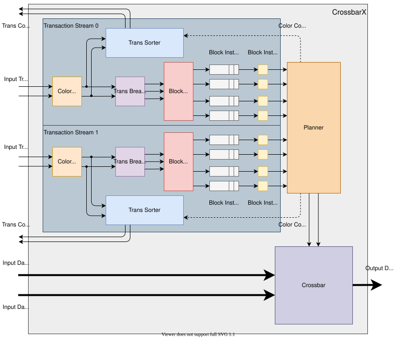
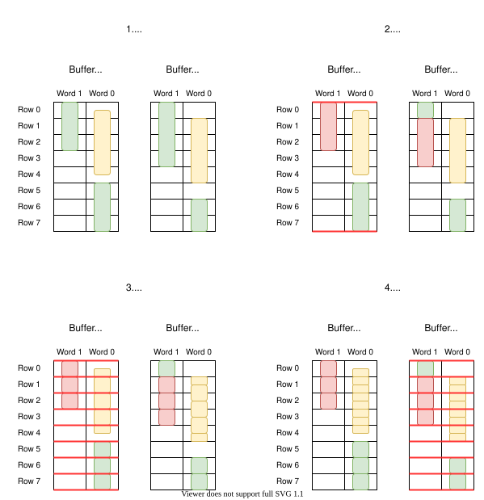

CrossbarX¶
This unit performs data transfer between two buffers connected on SRC_BUF and DST_BUF interfaces based on Transactions passed on the TRANS interface. Transactions can be passed on multiple independent Streams. Different Streams must have different Buffer A but common Buffer B. Transactions passed in one CLK tick on one Stream must not overlap in its Buffer A. CrossbarX unit solves collisions in Buffer B between all Transactions by planning the data transfers out-of-order. To enable tracking of the data transfer actual progress. The unit propagates Completed signal for each done Transaction together with its Metadata. These Completed signals have the same order as the input Transactions (within each Stream).
Block diagram¶
{kind=link}

Generics¶
Name |
Description |
|---|---|
DATA_DIR |
Data transfer direction. True for A to B, false for B to A. |
USE_CLK2 |
Transfer data using the double frequency clock. |
USE_CLK_ARB |
Transfer data on arbitrary frequency Clock.
(Overrides |
TRANS_STREAMS |
Number of independent Transaction Streams. |
BUF_A_COLS |
Number of Columns in Buffer A. |
BUF_A_STREAM_ROWS |
Number of Rows in Buffer A for each Stream. |
BUF_B_COLS |
Number of Columns in Buffer B. |
BUF_B_ROWS |
Number of Rows in Buffer B. |
BUF_A_SECTIONS |
Number of non-overlapping Sections of Buffer A. (All Instructions must overflow inside space of one Buffer A Section.) |
BUF_B_SECTIONS |
Number of non-overlapping Sections of Buffer B. (All Instructions must overflow inside space of one Buffer B Section.) |
ROW_ITEMS |
Number of Items in one Buffer Row. |
ITEM_WIDTH |
Width of one Item. |
TRANSS |
Number of input Transactions per Transaction Stream. |
TRANS_MTU |
Maximum length of one Transaction (in number of Items). |
METADATA_WIDTH |
Width of Transaction user Metadata. |
TRANS_FIFO_ITEMS |
Size of FIFO for Transaction awaiting completion (for |
COLOR_TIMEOUT_WIDTH |
Width of Color confirmation Timeout counter in Planner.
The resulting timeout takes |
COLOR_CONF_DELAY |
Delay of Color confirmation signal from Planner.
Setting this value too low will cause frequent changes of Color and thus a slightly lower throughput in Planner.
Setting it too high will cause greater filling of Transaction FIFO (see |
RD_LATENCY |
Source Buffer read latency. |
DATA_MUX_LAT |
Data transfer multiplexer’s latency (increase for better routing). |
DATA_MUX_OUTREG_EN |
Data transfer multiplexer’s output register enable (set to TRUE for better routing). |
DATA_ROT_LAT |
Data Blocks rotation latency (increase for better routing). |
DATA_ROT_OUTREG_EN |
Data Blocks rotation output register enable (set to TRUE for better routing). |
DEVICE |
Target FPGA device. |
Warning
When COLOR_TIMEOUT_WIDTH is set too low, the Timeout might expire between the arrival
of NEW_RX_TRANS signal and the arrival of the corresponding RX_UINSTR_SRC_RDY.
This could break the entire Color confirmation mechanism!
Ports¶
Name |
Dir |
Dimension |
Description |
|---|---|---|---|
CLK |
IN |
[1] |
Clock for Transaction input interface. |
CLK2 |
IN |
[1] |
Clock for data interfaces when |
RESET |
IN |
[1] |
Reset for |
CLK_ARB |
IN |
[1] |
Clock for data interfaces when |
RESET_ARB |
IN |
[1] |
Reset for data interfaces when |
TRANS_A_COL |
IN |
[TRANS_STREAMS][log2(BUF_A_COLS)] |
Column address of data in Buffer A. (Common for all Transactions on one Stream.) |
TRANS_A_ITEM |
IN |
[TRANS_STREAMS][TRANSS][log2(BUF_A_STREAM_ROWS*ROW_ITEMS)] |
Item address of data in Buffer A. |
TRANS_B_COL |
IN |
[TRANS_STREAMS][TRANSS][log2(BUF_B_COLS)] |
Column address of data in Buffer B. |
TRANS_B_ITEM |
IN |
[TRANS_STREAMS][TRANSS][log2(BUF_B_ROWS*ROW_ITEMS)] |
Item address of data in Buffer B. |
TRANS_LEN |
IN |
[TRANS_STREAMS][TRANSS][log2(TRANS_MTU+1)] |
Data length (in number of Items). |
TRANS_META |
IN |
[TRANS_STREAMS][TRANSS][METADATA_WIDTH] |
Transaction Metadata (if any). |
TRANS_VLD |
IN |
[TRANS_STREAMS][TRANSS] |
Transaction valid (for each Transaction). |
TRANS_SRC_RDY |
IN |
[TRANS_STREAMS] |
Source ready (for each Stream). |
TRANS_DST_RDY |
OUT |
[TRANS_STREAMS] |
Destination ready (for each Stream). |
SRC_BUF_RD_ADDR |
OUT |
[SRC_BUF_ROWS][log2(SRC_BUF_COLS)] |
Read address to Source Buffer (Buffer A or B depending on the value of |
SRC_BUF_RD_DATA |
IN |
[SRC_BUF_ROWS][ROW_ITEMS*ITEM_WIDTH] |
Read data from Source Buffer (Buffer A or B depending on the value of |
DST_BUF_WR_ADDR |
OUT |
[DST_BUF_ROWS][log2(DST_BUF_COLS)] |
Write address to Destination Buffer (Buffer B or A depending on the value of |
DST_BUF_WR_DATA |
OUT |
[DST_BUF_ROWS][ROW_ITEMS*ITEM_WIDTH] |
Write data to Destination Buffer (Buffer B or A depending on the value of |
DST_BUF_WR_IE |
OUT |
[DST_BUF_ROWS][ROW_ITEMS] |
Write Item Enable to Destination Buffer (Buffer B or A depending on the value of |
DST_BUF_WR_EN |
OUT |
[DST_BUF_ROWS] |
Write Enable to Destination Buffer (Buffer B or A depending on the value of |
TRANS_COMP_META |
OUT |
[TRANS_STREAMS][TRANSS][METADATA_WIDTH] |
Completed Transaction’s Metadata. |
TRANS_COMP_SRC_RDY |
OUT |
[TRANS_STREAMS][TRANSS] |
Completed Transaction’s valid. |
TRANS_COMP_DST_RDY |
IN |
[TRANS_STREAMS][TRANSS] |
Completed Transaction’s read enable. See warning. |
Warning
The TRANS_COMP_SRC_RDY and TRANS_COMP_DST_RDY ports are propagated read interface from a FIFOX Multi
and must comply to reading restrictions for this component.
See FIFOX Multi documentation here.
Architecture¶
The internal architecture of CrossbarX can be seen in the above diagram. The main advantage of the CrossbarX is its scalability when performing parallel data transfers on a very wide data bus. For this reason, the component allows to setup multiple independent Streams od Transactions. Each Stream’s Transactions are processed in its own pipeline. Only when the Transactions reach the component Planner, they are selected for parallel execution based on their read / write collisions.
{kind=link}

Each Transaction describes a block of data currently stored somewhere in the Source Buffer and ready to be transfered somewhere to the Desctination Buffer. The preprocessing pipeline of each Stream disects each Transactions to atomic Instructions. This disection is described in the Transaction processing diagram. Each Instruction describes a transfer of one Data Block (one Row within one Column). Multiple Instructions can be processed in each cycle as long as they don’t use the same Row in neither the Source nor the Desctination Buffer. The Planner is responsible for detection if these collisions and selection of a non-coliding subset from the input Instructions.
This selection process means, that the Instructions are actually performed out-of-order. To allow the user to use data of completed Transactions in-order, the Planner, the Color Generator and the Transaction Sorter work together to provide in-order confirmation of each Transaction’s execution. The Color Generator assigns a 1-bit Color to each Transaction. The Color is first changed after the first set of Transactions (one input word). This Color is propagated to Instructions created from the Transaction. In each moment the Planner only considers input Instructions of one Color to be valid. This eliminates the possibility of starvation since all Instructions of one Color must be processed before the other are even considered. Once the Planner accepts all Instructions of one color, it switches to the other Color and sends a Confirmation to the Color Generator. This Conformation causes the Color Buffer to switch Color as well and start assigning the new Color to newly incoming Transactions. This way the Color Generator is always generating different Color than the Planner is currently accepting (except for the very first set of Transactions).
For each Transaction coming from the Color Generator a information is input to the Transaction Sorter (FIFOX Multi). This information contains the Transaction’s valid bit, Color bit and Metadata. Here the information is store until a Conformation for its Color is generated by the Planner. This is a signal, which says, that the data of all Transactions bearing this Color have been successfully executed (all their data are stored in the Destination Buffer). At this point the Transaction Sorter allows the user to take the information out. This way the user is safely informed about the Transaction’s completion in a in-order fashion. The user can use the Metadata field to propagate any info regarding the Transactions which he intends to use after their completion.
References¶
For more detailed description refer to Jan Kubalek’s thesis 2019/20.